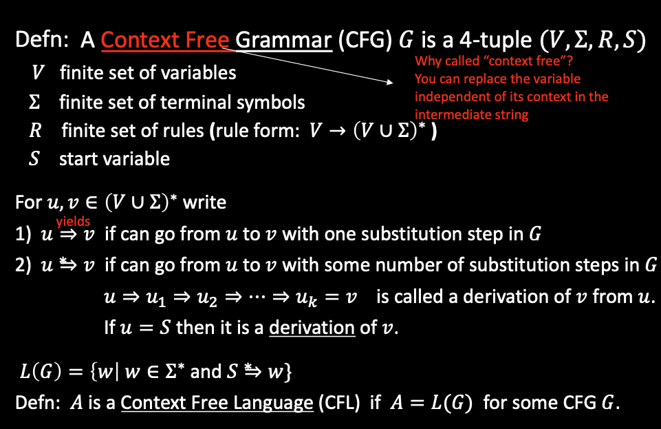
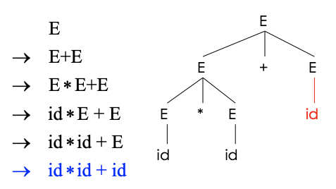
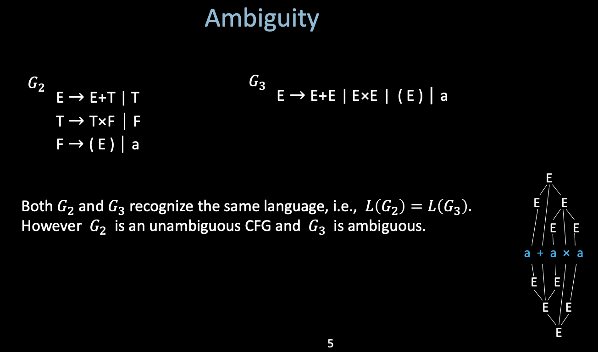

3. Parsing
1. Context-free Grammars
i. The limitation of Regular Languages
- The weakest formal languages that widely used.
- Finite automaton cannot remember # of times it has visited a particular state.
- There are a lot of languages that are non-regular (Using pumping lemma)
- i.e. Strings of balanced parentheses are not regular

ii. Context-free Grammars
Why do we need CFG?
There are a lot of things that Lexical Analysis cannot do, through there are also some complicated things that they can do.
Not all strings of tokens are programs, the parser must distinguish between valid and invalid strings of tokens.
| Phase | Input | Output | | ----- | ----- | ------ | | Lexer | String of characters | string of tokens | | Parser | String of tokens | Parse tree |
- The parser need to figure out the meaning of the input tokens, and the meaning is embedded within the structure of the parse tree
Terminals
- Programming language constructs have recursive structure.
EXPR:
if EXPR then EXPR else EXPR fi
while EXPR loop EXPR pool
- The tokens (cannot be replaced recursively) is called terminal
- The grammar's language is going to be a language over strings whose alphabet are the terminal symbols.
Definition of CFG

Context-free Grammars generate strings:
- Write down start variable
- Replace any variable accorting to a rule, Repeat until only terminals remain.
- Result is the generated string, and we've generated a string that is in the language of the grammar.
L(G)is the language of all generated strings.- We call
L(G)a Context Free language.
2. Parse Tree
The idea of CFG is a big step, but the CFG can only tell us whether a sequence of token are in or not in the language. Despite this, we are also intersted in the derivation process, which can be described as a Parse Tree.

A parse tree has:
- Terminals at the leaves
- Non-terminals at the interior nodes
An in-order traversal of the leaves is the original input.
i. Ambiguity
A Context-free Grammar is ambiguous if it has more than one parse tree for some string.

ii. Handle Ambiguity
It is impossible to convert automatically an ambiguous grammar to an unambiguous one, but we have two general ways:
- Precedence
- Associativity
iii. Abstract Syntax Tree
- Like parse trees but ignore some details.
- Capturing the nesting (recursive) structure of programming language.